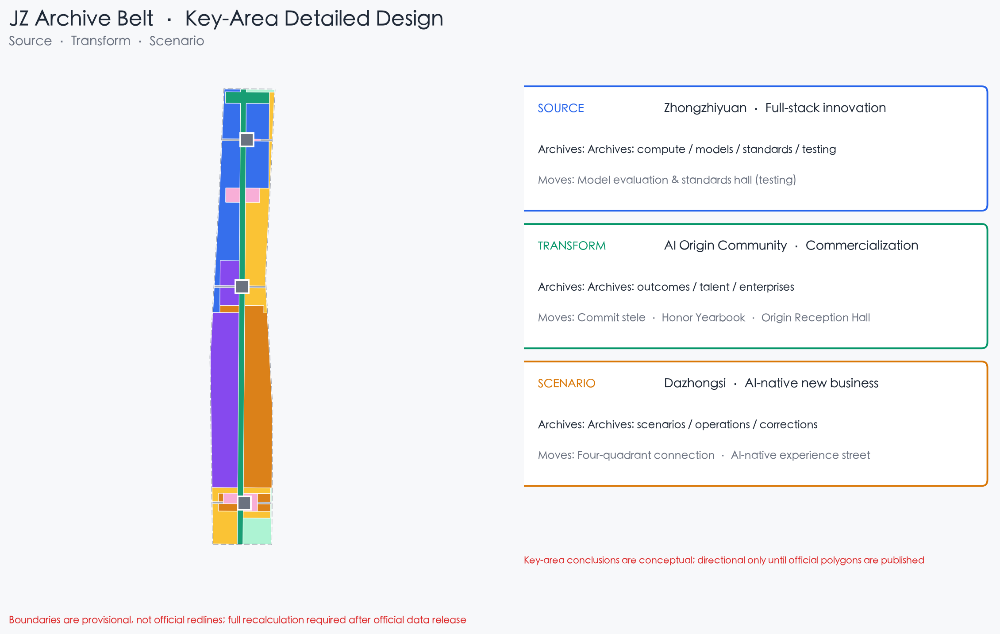
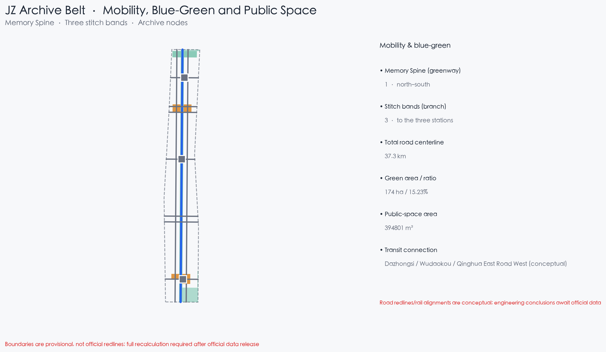
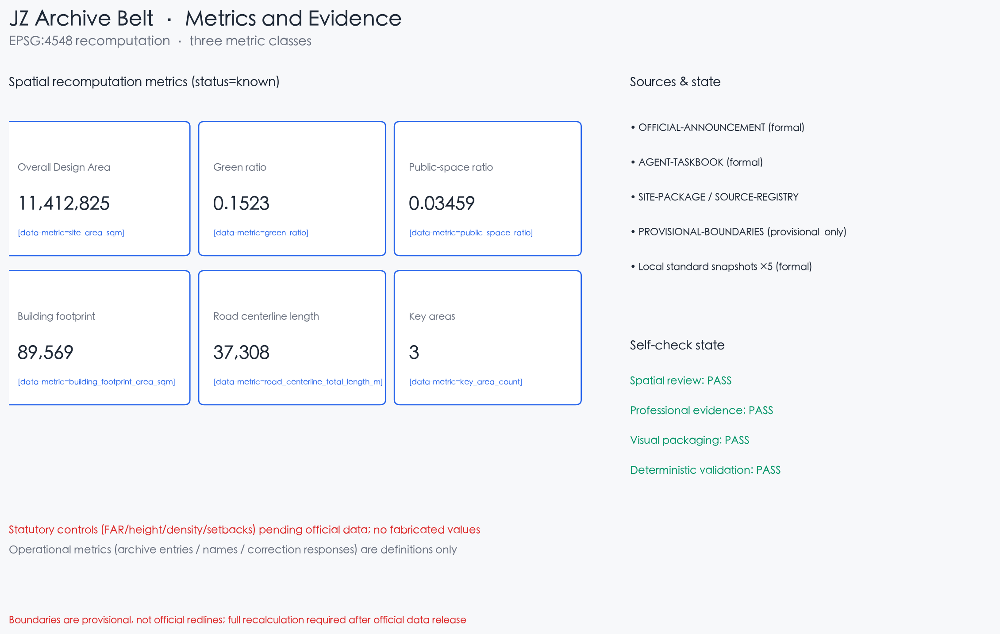
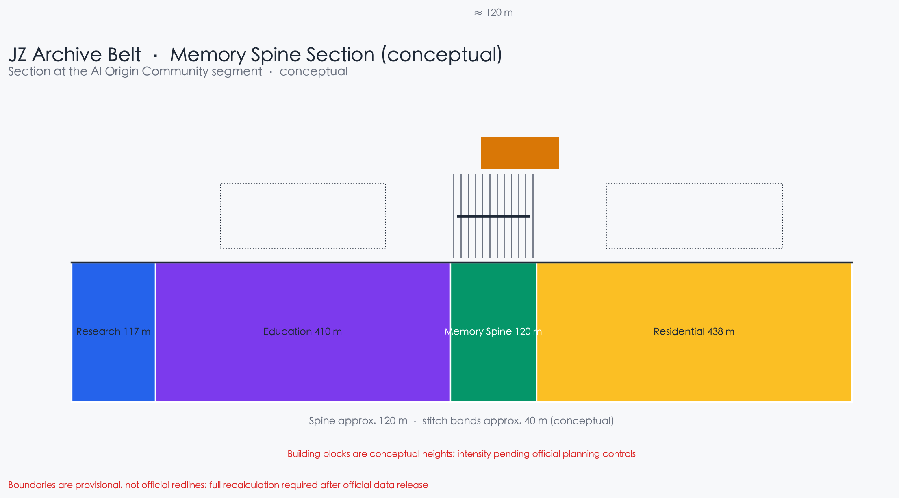
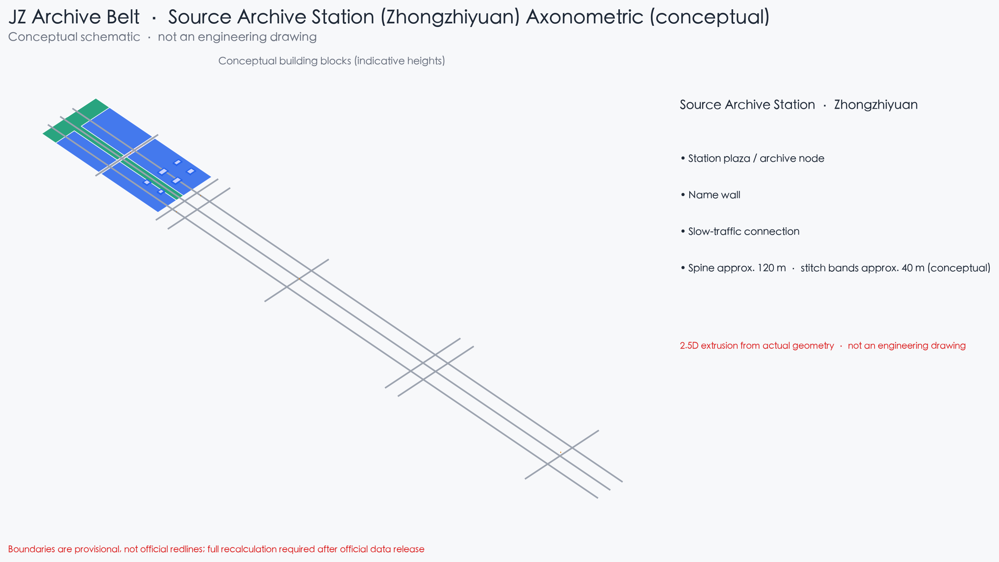

JZ Archive Belt · Write Open Co-Creation into the City Archive
Memory Spine · Three Archive Stations · Two Record Wings · Archive Charter
provisional boundary
conceptual recommendation
bilingual v1
spatial review PASS
Archive Charter
The Jing-Zhang Archive Belt writes open co-creation into the city archive: contributions, services, corrections and honors all enter the archive. A Memory Spine runs along the Jing-Zhang heritage park, with Source / Transform / Scenario archive stations on the three key areas. All spatial content is a conceptual proposal on a provisional boundary.
1. Open archiving: AI services and co-creation outputs are archived by default
2. Searchable: machine-readable archive entries, open to everyone
3. Corrections: residents may request review; corrections enter the archive
4. Privacy: contributions only, no trajectories; data classified
5. Honors: granted by human and professional final judgment
6. Archive as evidence: metrics, sources, assumptions, self-checks archived
Core metrics (EPSG:4548 recomputation, consistent with metrics.json)
总体设计范围 / Overall Design Area
11,412,825
绿地率 / Green ratio
15.23%
公共空间占比 / Public space ratio
3.46%
建筑基底面积 / Building footprint
89,569
建筑数量 / Building count
17
道路中心线总长 / Road length
37,308
重点区数量 / Key areas
3
Figures





Spatial depth


更新项目 · 分期（Renewal projects · Phasing）
| ID | Project | Phase |
|---|---|---|
| JZA-01 | Memory Spine south connection | P1 |
| JZA-02 | Contribution desk pilot | P1 |
| JZA-03 | Service archive boards ×8 | P1 |
| JZA-04 | Honor yearbook node | P1 |
| JZA-05 | Open-source commit stele | P1 |
| JZA-06 | Scenario test block | P2 |
| JZA-07 | Model evaluation & standards hall | P2 |
| JZA-08 | Dazhongsi four-quadrant connection | P1 |
| JZA-09 | Xiaoyue scenario record greenway | P2 |
| JZA-10 | Zhongzhiyuan Source Archive Station | P3 |
| JZA-11 | Dazhongsi Scenario Archive Station | P3 |
| JZA-12 | Archive Open Season operations | ongoing |
| JZA-13 | Archive data platform & charter | P2 |
Task coverage (compliance_matrix mapping)
| ID | Task |
|---|---|
| agent.1 | Overall concept and functional coordination |
| agent.2 | Full-stack AI innovation ecosystem |
| agent.3 | AI+ scenario enablement and smart city |
| agent.4 | AI public space, new business and landmarks |
| agent.5 | Jing-Zhang, Zhongguancun and AI culture narrative |
| agent.6 | Global AI events and long-term operations |
AI scenario archive cards (12, incl. 3 test scenarios)
Contribution desk · Service archive board · Memory era installations · Honor yearbook node · Open-source commit stele · Scenario test block (TEST) · Model evaluation & standards hall (TEST) · AI cultural guide · Smart civic service hub · AI-native consumption block · Xiaoyue experience path · Archive Open Season venue (TEST)
Self-check state
| Gate | State |
|---|---|
| Spatial review | PASS (provisional notice only) |
| Professional evidence | PASS |
| Visual packaging | in progress |
| Deterministic validation | PASS after figures/PDFs/bilingual |
Sources and status
- OFFICIAL-ANNOUNCEMENT (formal)
- AGENT-TASKBOOK (formal)
- SITE-PACKAGE / SOURCE-REGISTRY
- PROVISIONAL-BOUNDARIES (provisional_only)
- Local standard snapshots ×5 (formal)
- Gaps: official boundaries, controls, ownership, heritage → pending
Key assumptions
- A-BOUNDARY-PROVISIONAL: provisional geometry; full recalculation after official release
- A-CONTROLS-001: official controls missing; intensity is conceptual
- A-ARCHIVE-001: contributions only, no trajectories; human final judgment on honors